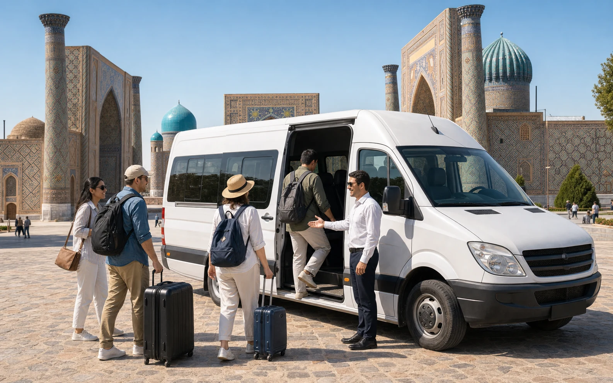
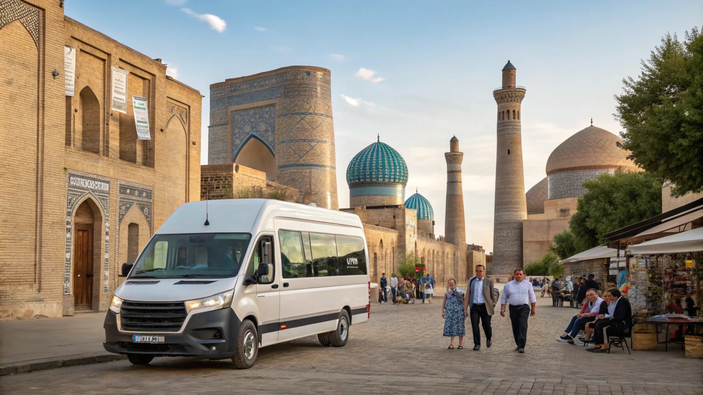

✓
До 11+ мест
Подбираем вместимость под реальное количество пассажиров и багажа.
Микроавтобус удобен, когда нужно перевезти группу с багажом, сохранить общий маршрут и заранее понимать стоимость поездки.
Посадочная страница закрывает коммерческий интент: человеку нужно быстро понять, подойдёт ли формат, сколько факторов влияет на цену и как оформить заявку без лишней переписки.

Дата, время подачи, маршрут, количество пассажиров, багаж, детские кресла и желаемый класс автомобиля.
Получить расчёт в WhatsAppПодбираем вместимость под реальное количество пассажиров и багажа.
Маршрут, ожидания, остановки и подача согласуются заранее.
Ташкент, Самарканд, Бухара, Чарвак и другие направления.
Обсуждаем время, километраж, ожидание, ночёвку водителя и доплаты до старта.
Определяем состав группы, багаж и требования к салону.
Согласовываем маршрут, длительность, ожидание и обратную подачу.
Подбираем микроавтобус и отправляем финальные условия бронирования.

Практичный микроавтобус для групп, экскурсий, трансферов и поездок за город.

Вместительный Starex для туристов, семей и корпоративных маршрутов.

Микроавтобус для больших групп, туристических маршрутов, мероприятий и междугородних поездок.
Если пассажиров больше 7-8, много багажа или маршрут длинный, микроавтобус обычно комфортнее и экономичнее.
Да, организуем междугородние поездки и многодневные маршруты по Узбекистану.
Зависит от задачи: трансфер, почасовая аренда, аренда на день или межгород считаются по-разному.
Мы не просим заполнять длинную форму: достаточно написать маршрут и дату. Менеджер уточнит детали и предложит подходящий автомобиль.

Аренда микроавтобуса – незаменимая услуга для тех, кто хочет увидеть Узбекистан, почувствовать его атмосферу и ощутить свободу передвижения.

Цена аренды микроавтобуса в Ташкенте: актуальные тарифы, главные факторы, лайфхаки и как сэкономить. Аренда с водителем, без и с гидом.